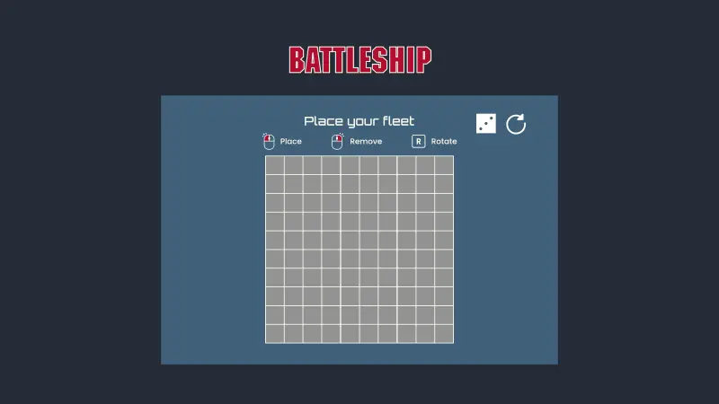
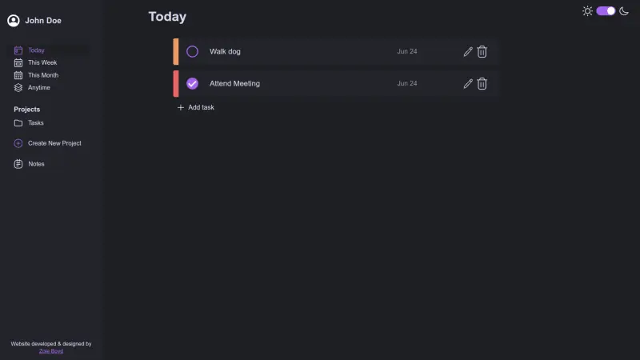
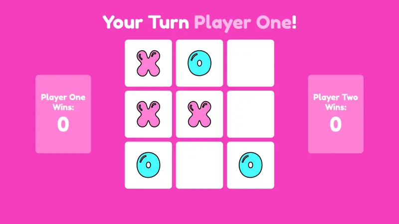
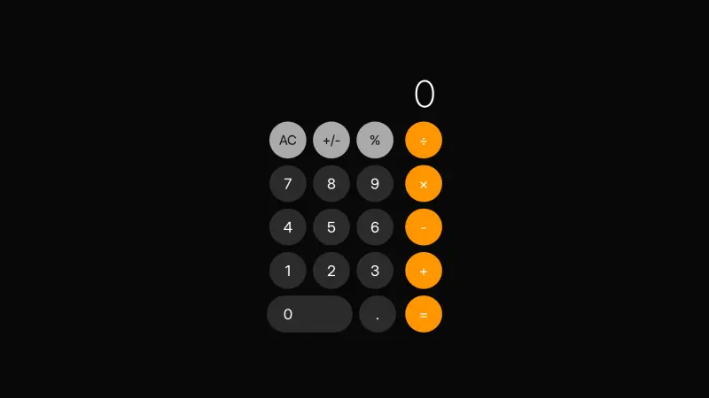

Hello! I'm Zoie
Frontend Developer
Dedicated to making the web a more accessible, functional and beautiful place.
Projects
(Click a card to learn more!)

Battleship
A digital edition of the classic Battleship board game. This project's development utilised Jest to write and run tests on game logic.

To Do
A task management web application designed to organise to-do lists, filter by categories and track priorities/due dates.

Weather App
A colourful web application built using asynchronous JavaScript to dynamically fetch and display weather data from around the globe.

Tic-Tac-Toe
A digital version of "Tic-Tac-Toe" designed for two-player local gameplay. Features game state tracking and win detection.

Library
A personal digital library that allows users to add, delete and track read status of books.

Calculator
A web-based replica of the iOS calculator interface. Features keyboard support and operation chaining.
Contact
(I would love to hear from you!)